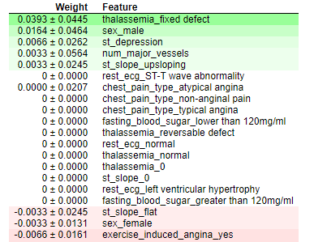

Please fill the form with accurate data. We have implemented different algorithms to calculate the accurate results. Our algorithms are 90% perfect. Moreover if 3 or more than 3 results are positive then there strong chances that you are going to ill. There are total 5 algorithms and their efficiency is more than 90%
Result is Positive. Go ahead and visit a doctor! {{ disease.positive }}/5
Result is negative. Say thanks to GOD. {{ disease.negative }}/5